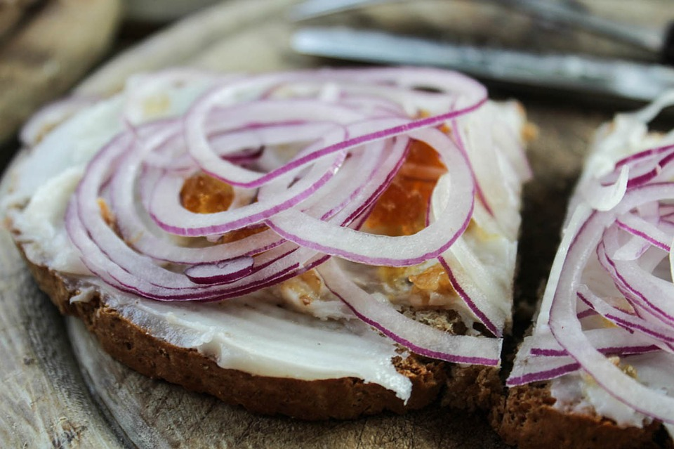

HDNC Dans Les Plats Salées
HDNC est très bonne pour la cuisson mais aussi pour les tartines
Curry Thaï Rouge
Pour 4-5 personnes
Faitez revenir une cuillère de curry rouge Thaï, sur une cuillère d'huile HDNC. Ajoutez 1kg de filet de poulet coupé en dés. Mélangez bien.
Après environ 5 minutes, ajoutez dans le poulet le mélange de légumes asiatiques surgélés. Après 10 minutes, ajoutez 400ml de crème de coco et 2 à 4 c. à s. de sauce soja salée (selon le goût)
Mélangez. C'est prêt!
A servir avec le riz blanc.
Pour 4-5 personnes
Faitez revenir une cuillère de curry rouge Thaï, sur une cuillère d'huile HDNC. Ajoutez 1kg de filet de poulet coupé en dés. Mélangez bien.
Après environ 5 minutes, ajoutez dans le poulet le mélange de légumes asiatiques surgélés. Après 10 minutes, ajoutez 400ml de crème de coco et 2 à 4 c. à s. de sauce soja salée (selon le goût)
Mélangez. C'est prêt!
A servir avec le riz blanc.
Les frites de potimarron
Pour environ 4 personnes
Lavez bien et videz (sans éplucher), le potimarron d'une taille moyenne.
Coupez le en grosses frites.
Prenez 1 c. à s. d'huile coco HDNC mélangez avec 1 c. à c. d'ail en semoule, 1 c. à c. de gros sel et 1 c. à c. d'épices 5 saveurs.
Mélangez tout cela avecle potimarron, placez à plat sur une plaque de cuisson et enfournez à 210°C (thermostat 7), chaleur tournante, pendant environ 20-25 minutes.
Elle sont idéales pour accompagner les viandes grillées.
Pour environ 4 personnes
Lavez bien et videz (sans éplucher), le potimarron d'une taille moyenne.
Coupez le en grosses frites.
Prenez 1 c. à s. d'huile coco HDNC mélangez avec 1 c. à c. d'ail en semoule, 1 c. à c. de gros sel et 1 c. à c. d'épices 5 saveurs.
Mélangez tout cela avecle potimarron, placez à plat sur une plaque de cuisson et enfournez à 210°C (thermostat 7), chaleur tournante, pendant environ 20-25 minutes.
Elle sont idéales pour accompagner les viandes grillées.

Tartine à l'ognion rouge et tomate
Pour une tartine.
Prenez une portion de votre pain favori (complèt de préfèrence). Etalez bien une portion (quantité selon goût) d'huile de noix coco HDNC.
Coupez les tomates en tranches fines et l'ognion en demi-lunes très fines.
Posez les tomates, puis les ognions sur votre tartine. Salez, poivrez et dégustez!
Pour une tartine.
Prenez une portion de votre pain favori (complèt de préfèrence). Etalez bien une portion (quantité selon goût) d'huile de noix coco HDNC.
Coupez les tomates en tranches fines et l'ognion en demi-lunes très fines.
Posez les tomates, puis les ognions sur votre tartine. Salez, poivrez et dégustez!